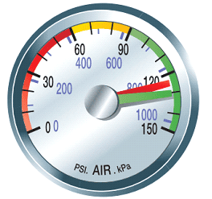

Protection Valve- Testing Procedure
- 1. Enter cab
"The wheels are chocked, both parking brakes are applied, My truck & trailer secure"

- 2. Exit Truck, Remove blue service glad-hand from trailer then re-enter cab
- 3. Start the engine
"I will release the truck parking brake" ( yellow brake In)
4. Lower driver windown down, Turn Truck off & Ign ON - 5. Press & hold Pedal/Service brake
"My current pressure is ___psi, I will hold my service brake down"
 - 6. Listen for possible air leaks from service line
"I will listen for possible air leaks from service line" - 7. After 10-15sec,
" I hear no air leak from my service line, my tractor protection valve is working" - 8. Apply truck Parking brake ( yellow Out), Re-Connnect Blue glad-hand, Secure the Truck & Trailer
- 9. Read Minor Defects & Major Defects
"My window is down, truck is off & Ignition is ON,
To see video of the Tractor protection Inspection:Press Here!.